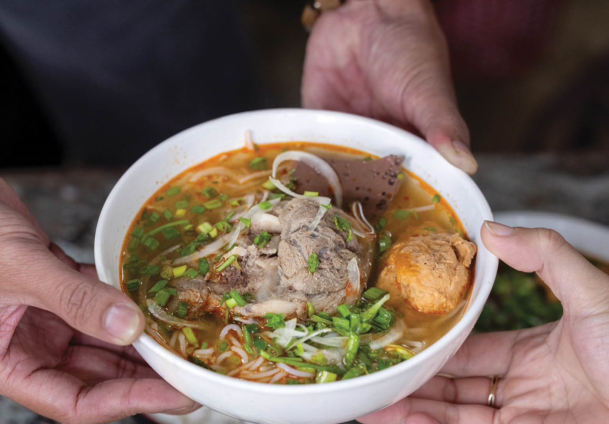
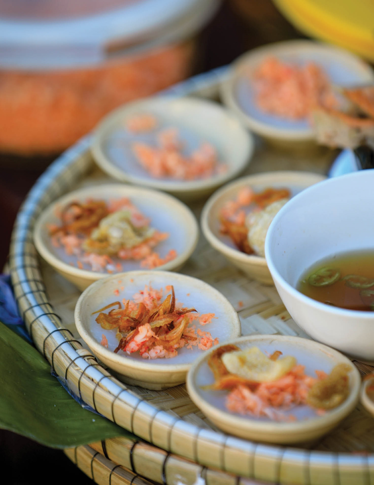
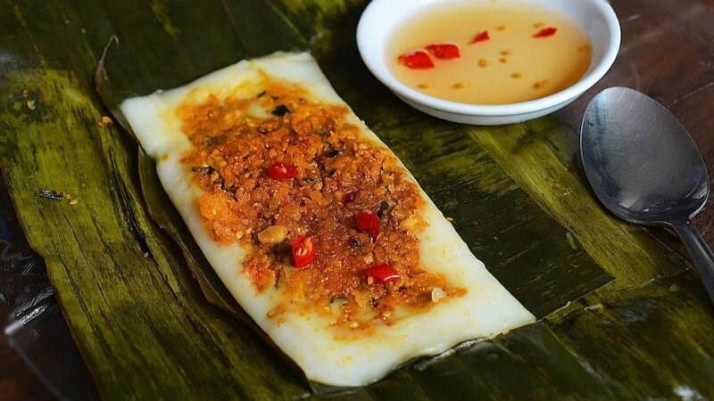
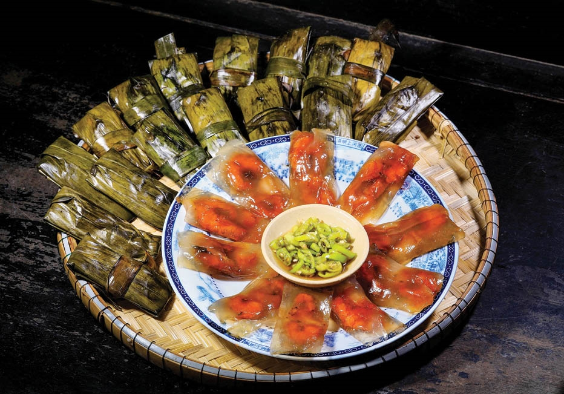
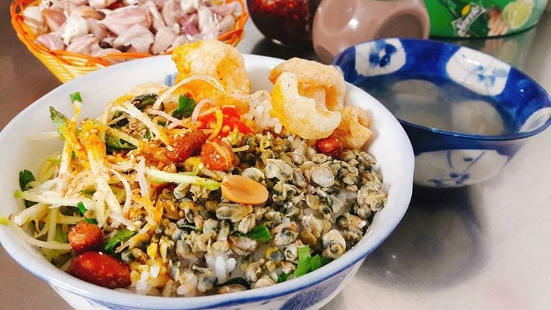
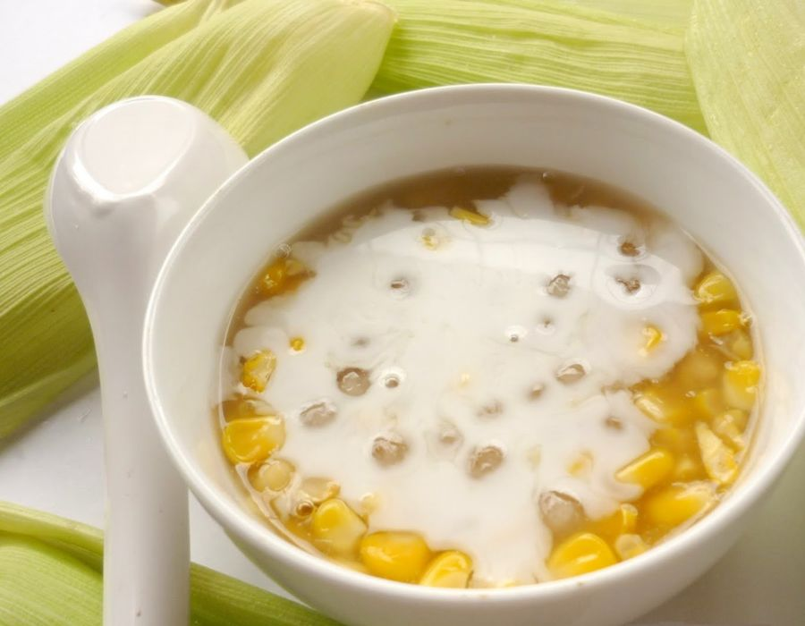
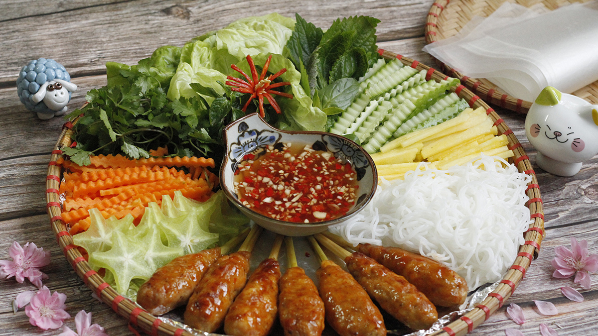
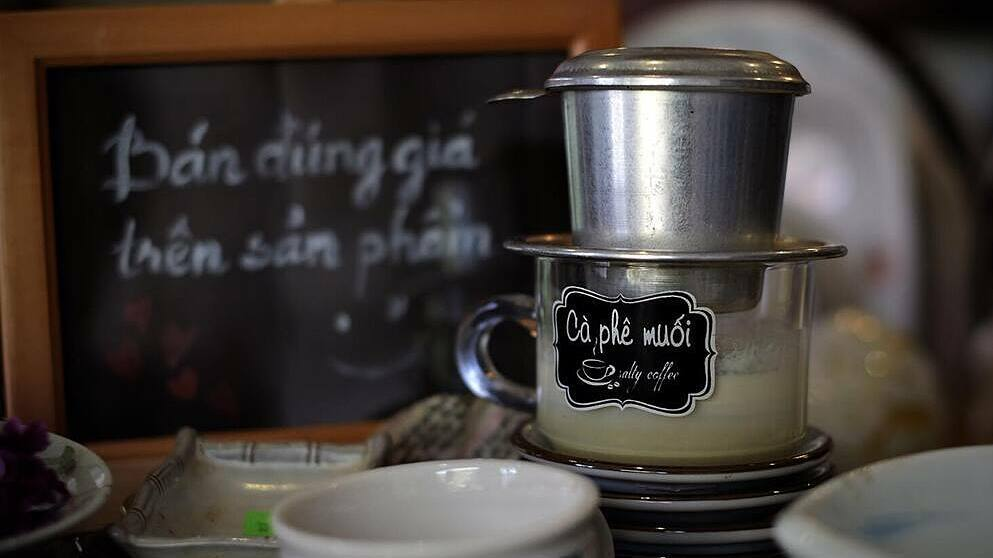

Bún bò Huế
Đậm đà, thơm nồng, một hương vị khó quên của xứ Huế.
Tìm hiểu bún bò Huế
Nước dùng thơm sả, vị mắm ruốc đặc trưng, ăn cùng bún, thịt bò và rau sống. Bạn có thể thêm ớt tùy khẩu vị.
Hành trình văn hóa - Trải nghiệm trọn vẹn
Trang chủ / Ẩm thực
Ẩm thực Huế không chỉ là món ăn, mà còn là câu chuyện về văn hóa và con người xứ Huế. Từ bát bún nóng đến chiếc bánh nhỏ, mỗi hương vị đều đáng để bạn dừng lại thưởng thức.
8 hương vị để khám phá

Đậm đà, thơm nồng, một hương vị khó quên của xứ Huế.
Nước dùng thơm sả, vị mắm ruốc đặc trưng, ăn cùng bún, thịt bò và rau sống. Bạn có thể thêm ớt tùy khẩu vị.

Chiếc bánh nhỏ mềm mịn, quyện vị tôm và nước mắm.
Bột gạo được hấp thành bánh nhỏ, thêm tôm và mỡ hành. Thưởng thức từng chiếc với nước mắm để cảm nhận vị mềm, bùi và mặn ngọt.

Mỏng mềm, thơm dịu, nâng niu trong từng lớp lá.
Bánh làm từ bột gạo, dàn mỏng cùng nhân tôm thịt, gói trong lá rồi hấp. Bánh ngon khi còn ấm, ăn kèm một chút nước mắm.

Vỏ bánh trong, dai nhẹ, ôm trọn phần nhân đậm vị.
Bột năng tạo nên lớp vỏ trong và dai đặc trưng. Nhân thường có tôm và thịt; bánh có thể gói lá hoặc để trần, dùng cùng nước mắm.

Mộc mạc mà đậm đà, gắn với nhịp sống ven sông.
Cơm trộn cùng hến, rau thơm, đậu phộng và các gia vị. Nước hến thường được để riêng, tạo nên bữa ăn dân dã với nhiều lớp hương vị.

Chút ngọt thanh để khép lại một buổi dạo chơi.
Chè Huế có nhiều loại, từ chè đậu đến chè hạt sen. Ảnh minh họa là chè bắp với nước cốt dừa, có vị ngọt dịu và hương bắp thơm nhẹ.

Thơm lừng trên bếp nướng, ăn cùng rau xanh giòn mát.
Thịt được quết, nêm gia vị, bọc quanh que rồi nướng. Cuốn nem với bánh tráng, rau sống và chấm nước chấm để thưởng thức.

Đắng nhẹ, béo dịu và một chút mặn đầy thú vị.
Vị cà phê kết hợp cùng sữa và lớp kem muối. Khuấy nhẹ để các lớp hòa quyện rồi nhấp từng ngụm. Ảnh minh họa là cà phê muối pha phin tại Huế.
Từ bữa cơm thường ngày đến những món ăn được chăm chút cầu kỳ, ẩm thực Huế hấp dẫn ở cách nêm nếm, sự khéo léo và lòng hiếu khách của người nấu.
Dành một buổi dạo chợ Đông Ba, ghé những hàng bánh nhỏ và chậm rãi thưởng thức hương vị địa phương.
Tìm chợ Đông Ba (mở bản đồ trong tab mới)Ảnh chụp thực tế được tuyển chọn từ các bài giới thiệu ẩm thực và hướng dẫn nấu ăn. Khung hiển thị cắt theo bố cục của trang; quyền ảnh thuộc các tác giả và đơn vị nguồn.
Ảnh sông Hương dùng lại từ thư mục ảnh của website. Đọc thêm về ẩm thực Huế tại Vietnam Tourism.